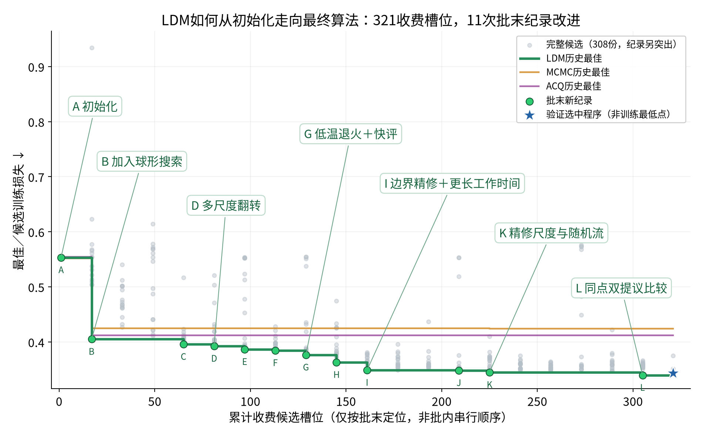

A · R0 · 只返回观测初始化
实际改动：直接调用共享initialize，不进行迭代搜索。
设计作用：建立搜索前对照。
训练损失 0.553368145；平均求解 1.004秒；批末收费1槽。
冻结源码 · 153f0991291ae89c1b8f20474cf2618b63a46770718cdf90baf25770f6eb0ab5
横坐标为批末累计收费槽位；同轮点共享横坐标，不表示并行批次内部顺序。候选悬浮提示含源码、损失和实际秒；A–L的改动可在下方逐项核查。13次收费接口拒绝不虚构分数。

图形语法参考 karpathy/autoresearch · analysis.ipynb。改动描述按实际活动分支核对，未直接照抄候选标题；相邻纪录不声称直接父子关系，分数差不是单个组件的独立效应。R10实际工作时间同时增加；L及最终赢家保留既有best_pair记录问题。
实际改动：直接调用共享initialize，不进行迭代搜索。
设计作用：建立搜索前对照。
训练损失 0.553368145；平均求解 1.004秒；批末收费1槽。
冻结源码 · 153f0991291ae89c1b8f20474cf2618b63a46770718cdf90baf25770f6eb0ab5
实际改动：在可行域随机选球心，0.075D尺度翻转体素；每次修复约束，仅接受更低公开损失；工作比例0.75。
设计作用：让观测初始体持续改善，而非直接返回。
训练损失 0.405100517；平均求解 91.102秒；批末收费17槽。
冻结源码 · 与上一纪录的源码差异 · db7e22d78f988eb1f4c3f079983a2819d8b451f80117082e8f9334d8b8320f07
实际改动：FAST=True，评分函数已做规范化，删去评分前重复canonicalize；单尺度仍为0.075D，工作比例0.68。
设计作用：减少一次提议中的重复距离场计算。
训练损失 0.395847568；平均求解 83.044秒；批末收费65槽。
冻结源码 · 与上一纪录的源码差异 · f9663a709a42752068f2b4fce5817144edf66fc9edcf0c03018dfdfc747c42d2
实际改动：新增SCALE_MIX=(0.05,0.075,0.105)，每次随机抽取球形翻转尺度。
设计作用：同时尝试小范围边界修改与较大形状修改。
训练损失 0.392533941；平均求解 83.079秒；批末收费81槽。
冻结源码 · 与上一纪录的源码差异 · 50f40dac4332f32dbe2b564f542929910385f4bc5203977b1989bed75606cccd
实际改动：半径集合扩展到0.13D；增加_add/_remove，按排名补足或裁剪体积。
设计作用：扩大空间搜索步幅，并更明确处理体积约束。
训练损失 0.386693570；平均求解 83.147秒；批末收费97槽。
冻结源码 · 与上一纪录的源码差异 · 9a8a0e729958b85ea09a34f72a0a761aeb3ff50470e1699acb3f6008469b62e1
实际改动：半径集合再加入0.17D，保持0.68工作比例与贪心接受。
设计作用：进一步覆盖更大范围的形状变化。
训练损失 0.384622707；平均求解 82.776秒；批末收费113槽。
冻结源码 · 与上一纪录的源码差异 · a42ff6ddd69739a7a1ce233742b4946dd7cf6719479cb35d6ee482b8404951b9
实际改动：mode=anneal，T0=1e-5；fast_legal/fast_loss启用；先评分合法提议，不合法才修复；偏移43。
设计作用：允许少量非改进移动，并减少合法提议的重复处理。
训练损失 0.376580361；平均求解 83.215秒；批末收费129槽。
冻结源码 · 与上一纪录的源码差异 · c44598f1498f1ea14da0b1cb041609aa3a1a6245efd2b3c82fc9132f698304d8
实际改动：T0由1e-5改为3e-5，随机偏移43改为11；尺度与工作比例保持不变。
设计作用：调整接受较差提议的概率和随机搜索路径。
训练损失 0.363180845；平均求解 83.183秒；批末收费145槽。
冻结源码 · 与上一纪录的源码差异 · 9294c07a1add50b7d5c3c1596bfbaa63a62a1e96eb465b3a0aa5bf226ea0fb8b
实际改动：实际分支仍为sphere；工作比例0.68→0.94，前0.68退火，余下做边界半径1/2立方翻转。
设计作用：把额外工作时间投入边界局部改进；收益同时包含实际算时增加。
训练损失 0.348887084；平均求解 114.308秒；批末收费161槽。
冻结源码 · 与上一纪录的源码差异 · 6963b60f1a6d7f23dcb746b233a2ff8446ab2b9f90d4820ec4e39bb4a6501257
实际改动：退火比例0.68→0.56，工作截止仍0.94；精修随机半径改为1/2/3。
设计作用：留出更多边界精修时间，并扩展局部邻域。
训练损失 0.348267093；平均求解 113.388秒；批末收费209槽。
冻结源码 · 与上一纪录的源码差异 · bc3e11690a05e0ef96bf4e19dfc6d7973e370b95696f31cf29345f8cbab0b5cd
实际改动：精修半径1/2/3→1/3，随机偏移11→31；仍随机选一个邻域评分。
设计作用：在最小和较大邻域间分配局部搜索。
训练损失 0.344850660；平均求解 113.323秒；批末收费225槽。
冻结源码 · 与上一纪录的源码差异 · 4eec5e53873bd422fd4c10c8ff95167626182a6e9a94f553f7d5a40ac681ca00
实际改动：best_pair对同一边界点分别评分半径1和3，再选改进提议；其best模型记录问题已披露。
设计作用：用同一边界位置比较两种邻域；该源码整体获得训练最佳。
训练损失 0.339720108；平均求解 113.335秒；批末收费305槽。
冻结源码 · 与上一纪录的源码差异 · 776ee0300e9757563c2d5e1b087c3499f111b2bfd9b7dfa979c35f3c8cc979fd